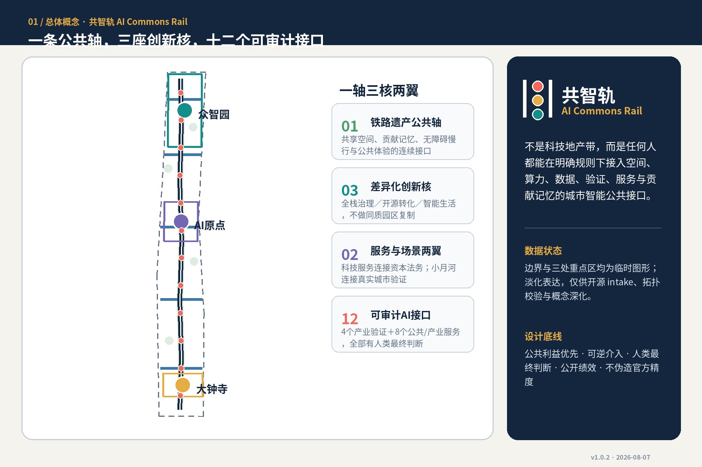
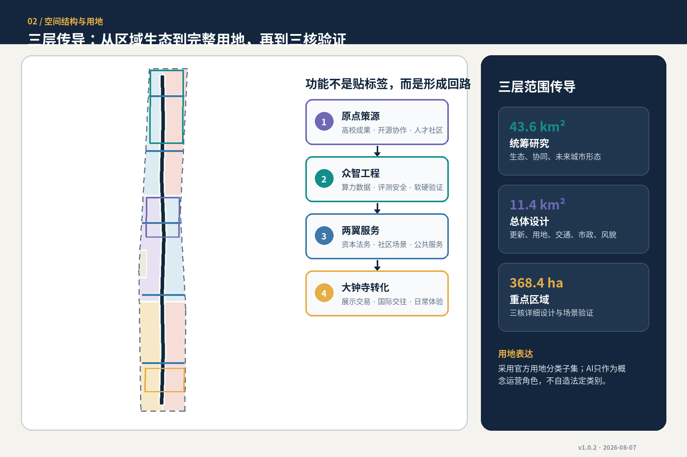
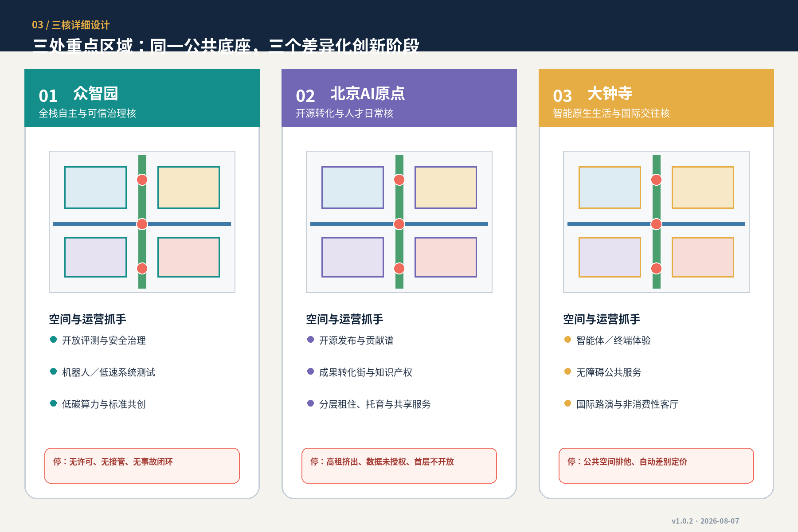
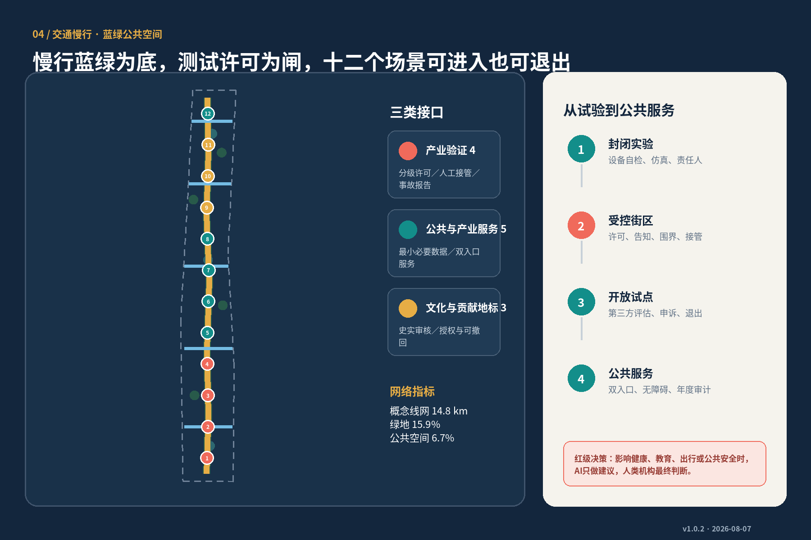
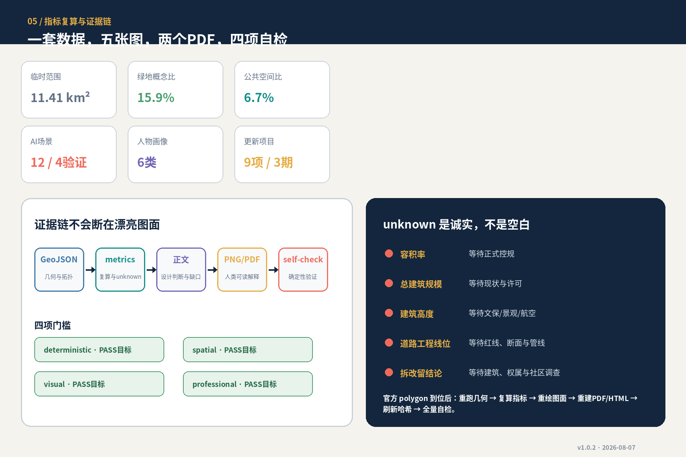

总览地图
总体概念、三层范围、重点区域和资料边界。

三层范围与用地分区
统筹研究—总体设计—重点区域逐层传导，AI功能不替代法定用地分类。

重点区域
众智园全栈治理、AI原点开源转化、大钟寺智能生活。

交通慢行与蓝绿公共空间
南北连续、东西缝合；建筑与更新项目以公共轴和横链为先决接口。

核心指标
值与 metrics.json 同源；临时范围内的设计复算不是控规指标。
site_area_sqm11.41 km²
green_ratio15.9%
public_space_ratio6.7%
AI 场景12
产业验证4
更新项目 / 分期9 / 3

AI 场景
四个产业测试验证场景与八个公共/产业服务场景，每个都有最小数据、人工复核、运营与退出。
01 开源发布与模型评测厅
02 机器人低速系统测试环
03 可信数据授权沙盒
04 端侧算力与低碳调度驿站
05 AI慢行与无障碍导航
06 社区健康服务导航
07 教育与终身学习助手
08 企业合规与知识产权助手
09 京张记忆可解释导览
10 中关村贡献谱与荣誉档案
11 全球开发者协作会客厅
12 大钟寺智能原生生活剧场
任务覆盖与自检状态
公告1.3/1.4/1.5、agent.1—agent.6、专业标准和十五项设计深度均进入矩阵。
建筑与更新项目
概念建筑只检验空间关系；拆改留等待文保、现状、权属和市政调查。九个更新项目采用门槛式分期。
来源
sources.json 区分正式任务、provisional geometry 与六个背景案例；不使用商业地图瓦片或新闻图作边界。
假设
assumptions.json 明示红线、重点区、控规、道路、权属、建筑、文保、市政和公服缺口。
自检状态
目标：deterministic / spatial / visual / professional 全部 PASS。
任务覆盖
GeoJSON → metrics → proposal → PNG/PDF/HTML → self_check，任一层修改都刷新哈希与全量复核。
边界提示： 本页使用仓库 provisional boundary，仅支持开源 intake、可视化和概念讨论；不是官方红线或精确面积依据。官方 polygon 到位后统一重算。